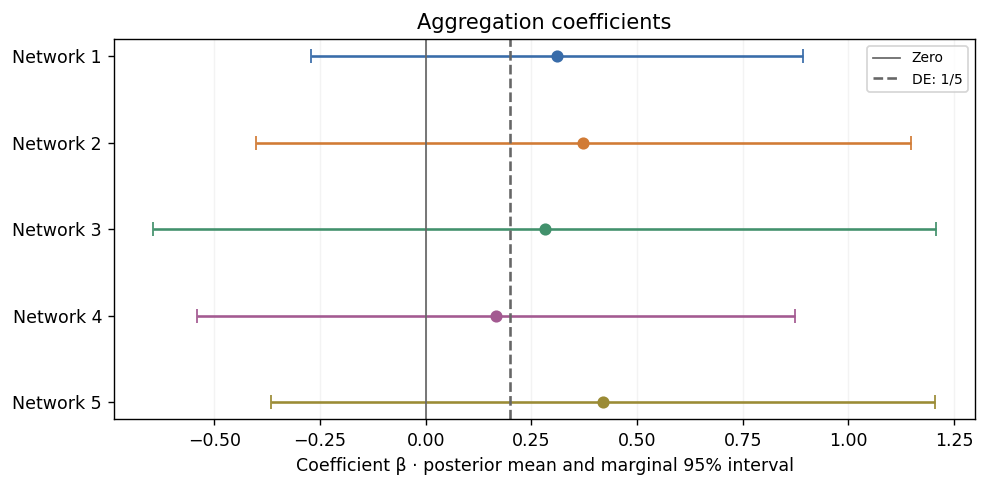
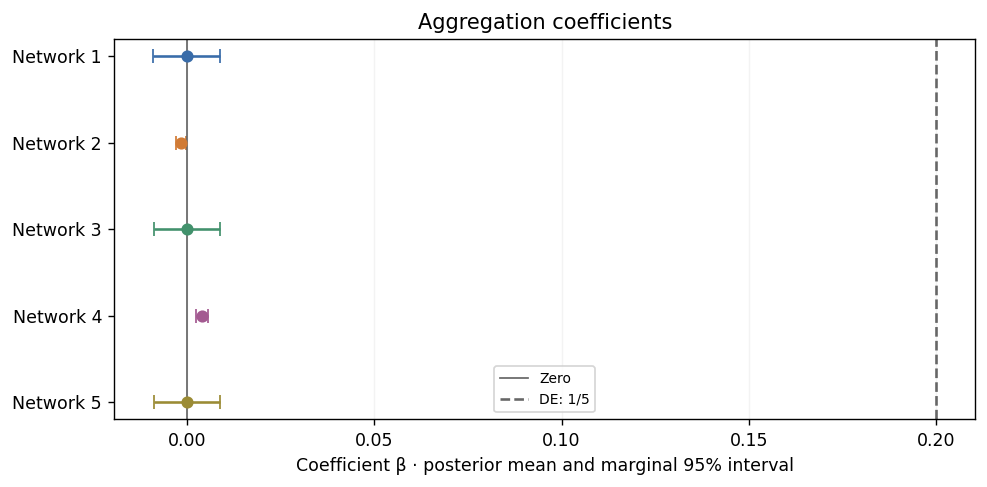
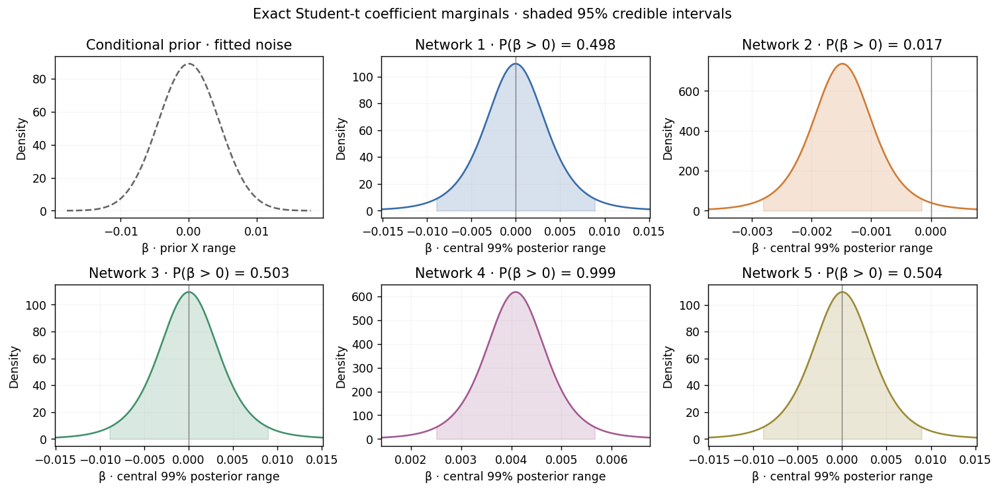
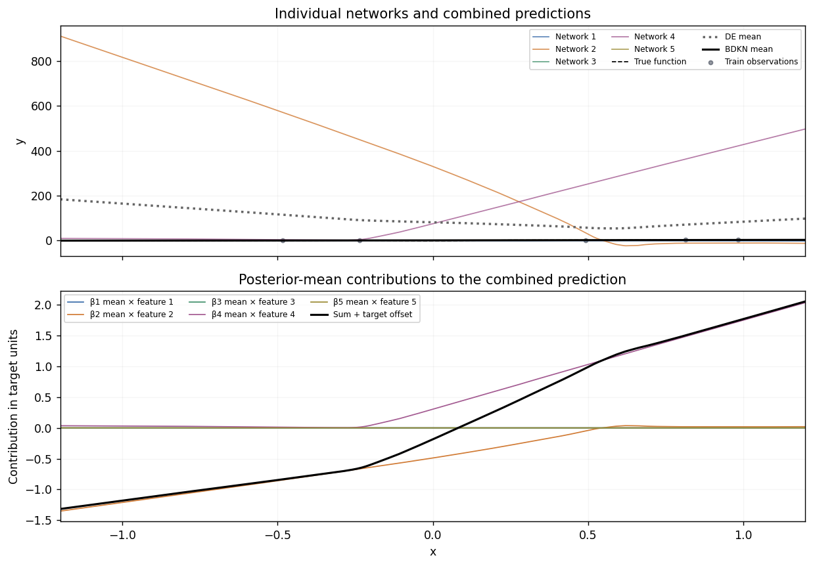
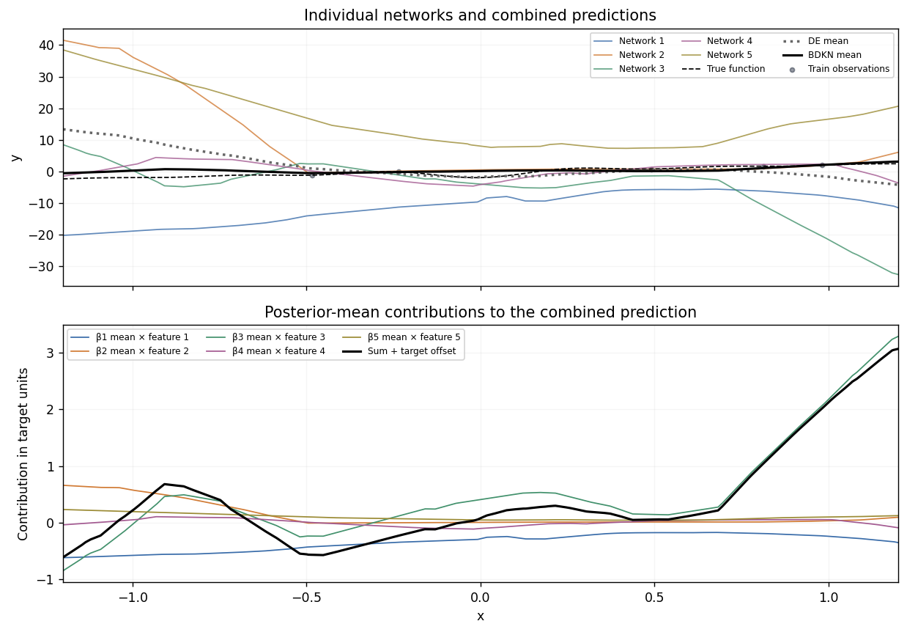
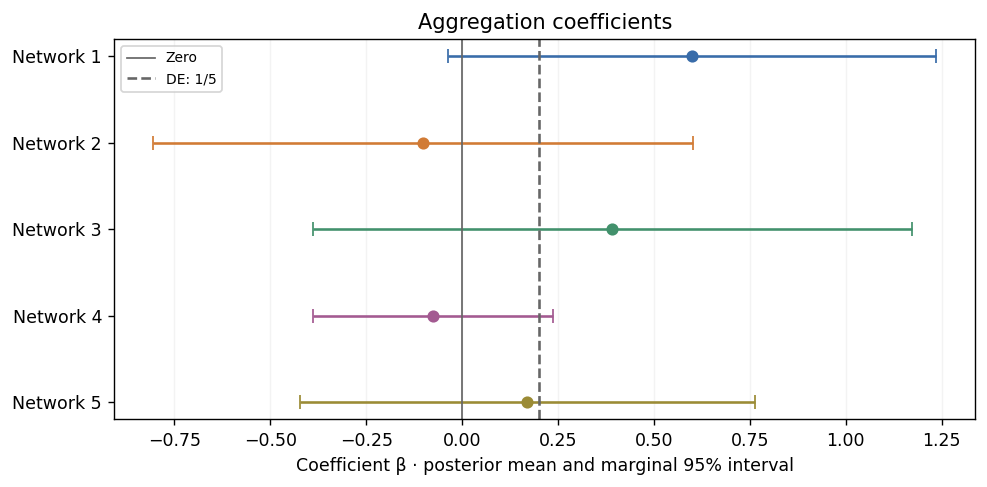
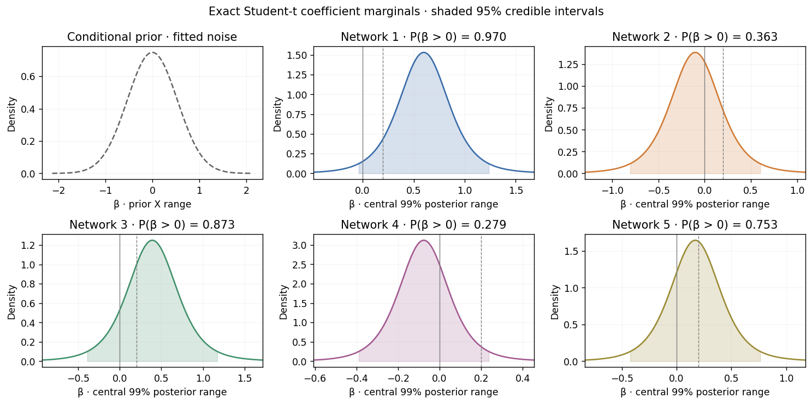
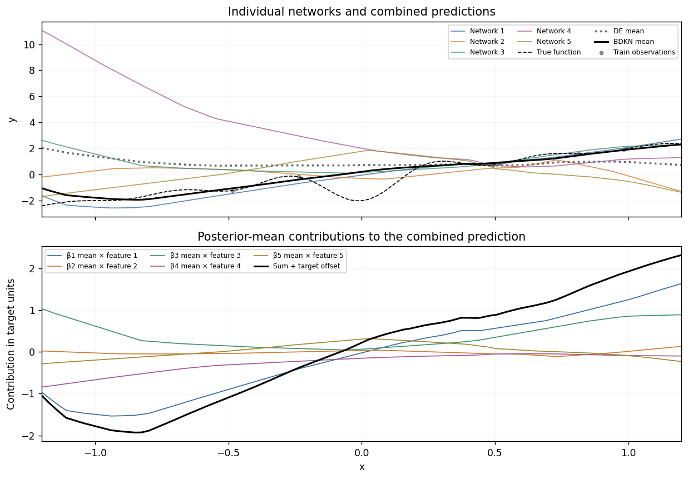

Regression comparison
Download resultsAggregation weights
Coefficients can be negative and need not sum to one. Intervals describe coefficient uncertainty; the dashed reference is DE’s fixed 1/H weight.
BDKN



Each density panel uses its own X range for readability; coefficient intervals above share a common axis. Prior reference conditions on fitted noise. Contribution shares use held-out inputs; test targets are used only for scoring.
| Network | β mean | 95% low | 95% high | P(β > 0) | Contribution share | Test RMSE | Test NLL |
|---|---|---|---|---|---|---|---|
| 1 | 0.31050 | -0.27060 | 0.89160 | 0.88601 | 0.27723 | 0.59775 | 2.45006 |
| 2 | 0.37235 | -0.40228 | 1.14698 | 0.86426 | 0.18398 | 1.00584 | 1.84937 |
| 3 | 0.28116 | -0.64405 | 1.20638 | 0.76497 | 0.10405 | 1.08943 | 1.52833 |
| 4 | 0.16563 | -0.54140 | 0.87266 | 0.71334 | 0.14842 | 0.69465 | 1.08673 |
| 5 | 0.41973 | -0.36533 | 1.20479 | 0.88613 | 0.28632 | 1.01801 | 1.42300 |
Functional repulsion · BDKN



Each density panel uses its own X range for readability; coefficient intervals above share a common axis. Prior reference conditions on fitted noise. Contribution shares use held-out inputs; test targets are used only for scoring.
| Network | β mean | 95% low | 95% high | P(β > 0) | Contribution share | Test RMSE | Test NLL |
|---|---|---|---|---|---|---|---|
| 1 | -0.00002 | -0.00893 | 0.00889 | 0.49761 | 0.00003 | 2.56067 | 3.89081 |
| 2 | -0.00148 | -0.00281 | -0.00016 | 0.01746 | 0.43956 | 456.33895 | 12.38767 |
| 3 | 0.00003 | -0.00889 | 0.00894 | 0.50277 | 0.00002 | 0.86516 | 1.91631 |
| 4 | 0.00409 | 0.00251 | 0.00566 | 0.99942 | 0.56036 | 227.03570 | 8.78109 |
| 5 | 0.00003 | -0.00888 | 0.00895 | 0.50367 | 0.00003 | 0.85107 | 1.91894 |
Weight repulsion · BDKN



Each density panel uses its own X range for readability; coefficient intervals above share a common axis. Prior reference conditions on fitted noise. Contribution shares use held-out inputs; test targets are used only for scoring.
| Network | β mean | 95% low | 95% high | P(β > 0) | Contribution share | Test RMSE | Test NLL |
|---|---|---|---|---|---|---|---|
| 1 | 0.03043 | -0.11874 | 0.17961 | 0.68880 | 0.27343 | 11.65032 | 4.83840 |
| 2 | 0.01588 | -0.18118 | 0.21294 | 0.57797 | 0.09591 | 15.45344 | 4.38717 |
| 3 | -0.10052 | -0.19039 | -0.01064 | 0.01739 | 0.51301 | 10.86218 | 764964.23102 |
| 4 | 0.02416 | -0.15820 | 0.20652 | 0.62635 | 0.04049 | 2.66662 | 3.04447 |
| 5 | 0.00605 | -0.12128 | 0.13338 | 0.54620 | 0.07716 | 18.47954 | 5.26071 |
First-order repulsion · BDKN



Each density panel uses its own X range for readability; coefficient intervals above share a common axis. Prior reference conditions on fitted noise. Contribution shares use held-out inputs; test targets are used only for scoring.
| Network | β mean | 95% low | 95% high | P(β > 0) | Contribution share | Test RMSE | Test NLL |
|---|---|---|---|---|---|---|---|
| 1 | 0.59891 | -0.03814 | 1.23596 | 0.96982 | 0.51063 | 0.67152 | 2.16939 |
| 2 | -0.10132 | -0.80479 | 0.60216 | 0.36319 | 0.02440 | 1.57797 | 1.97995 |
| 3 | 0.39176 | -0.38877 | 1.17230 | 0.87329 | 0.23544 | 1.71601 | 1.56445 |
| 4 | -0.07629 | -0.38891 | 0.23632 | 0.27898 | 0.14620 | 5.23637 | 2.71583 |
| 5 | 0.17019 | -0.42314 | 0.76353 | 0.75298 | 0.08333 | 1.80963 | 2.43910 |